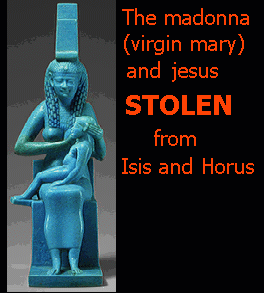

"It has served us well, this myth of Christ"
-Pope Leo X [1475-1521]*
THE MYTH OF THE RESURRECTION:
STOLEN!
The resurrection is a common theme found in numerous completely different religions throughout the world, symbolic of a descent to the underworld and a later return. Mesopotamia: Ishtar's/Inanna's descent and return [she was resurrected from the dead], Egypt: Osiris, God of the Underworld was resurrected, Greece: Persephone's descent into the underworld and return, the list of resurrected Gods is extensive and is based a concept, not actual characters. This Pagan allegory is based upon the Magnum Opus and what is known as the "Nigredo Stage."
- THE NUMEROUS TRINITIES:
- Anu, Enlil and Ea- the Christian Church stole their "God the Father," and "God the Son" from this one.
- Bel-Saturn, Jupiter-Bel, and Baal-Chom
- Brahma, Vishnu, and Siva
- Mithra, Varuna, and Indra
- Jupiter, Juno, and Minerva
- Osiris, Isis, and Horus
- Three-bodied goddess Hecate
- Three-headed Scylla
- Triune divinities of the Cabiri.
- Three-headed Dog, Cerberus
- Taoism: the trinity San Qing [Three Pure Gods]. Yu Qing [Jade Pure] Shang Qing [Upper Pure] and Tai Qing [Great Pure]
- Monju Bosatsu, Fugen Bosatsu and the historical Buddha called the "Shaka Trinity" [SHAKA SANZON]
- Ka [Spirit or Ether], Ba [ Body], and the Ankh [Immortality]
- Tamas [Stability] Sattwa [orderliness] Rajas [Restlessness] from the "Guna" Sanskrit translation
- Artemis, Aphrodite, and Hecate
- Kore, Persephone, and Demeter
- Shen [Spirit], C'hi [Vitality], and Ching [Essence] the three treasures of Taoist Wai Tai [internal alchemy]
- Alpha, Omega, and Iota
- The Devil's Trident [the "Trishul"]
Of course, we can't forget "the Father, the Son and the Holy Ghost."
The Nazarene's crucifixion is nothing new. Acts 5:30 The God of our fathers raised up Jesus, whom ye slew and hanged on a tree. I Peter 2:24 Who his own self bare our sins in his own body on the tree, that we, being dead to sins, should live unto righteousness: by whose stripes ye were healed.
The Norse God Odin preceded Jesus the Christ. Odin hung from a tree and experienced a death of sorts to obtain knowledge. Through being "reborn," he obtained gnosis [advanced spiritual knowledge], as did the Egyptian God Set who was “crucified” on a “cross” known as a furka.1 In addition, Krishna, Marsyas, Dodonian, and Zeus also hung from trees. This is also the meaning of the hanged man card in the Tarot. The Buddha also sat beneath a "Bo Tree." "Bo" is of "Boa" meaning "serpent" the kundalini. The tree is an ancient depiction of the human soul, with the trunk being symbolic of the spine and the branches symbolizing the 144,000 nadis with the leaves and fruits symbolizing the fruits of meditations; the life force and powers of the mind and soul. In addition, Krishna, Marsyas, Dodonian, and Zeus also hung from trees. "144,000" is another Jewish/Christian Biblical corruption of an allegory having to do with the nadis of the human soul, of which are special pathways for the life-force.
Below is a further list of Gods who hung from trees:
- Tammuz of Syria, 1160 BCE
- Wittoba of the Telingonese, 552 BCE
- Iao of Nepal, 622 BCE Iao is often spelt "Jao" sound familiar? This is the root of the Hebrew god "Jehova."
- Hesus of the Celtic Druids, 834 BCE. Note the similarity of "Hesus" with "Jesus."
- Quetzalcoatl of Mexico 587 BCE
- Quirinus of Rome 506 BCE
- Prometheus 547 BCE "In the account of the crucifixion of Prometheus of Caucasus, as furnished by Seneca, Hesiod and other writers, it is stated that he was nailed to an upright beam of timber to which were affixed extended arms of wood, and that this cross was situated near the Caspian Straits."
- Thulis of Egypt, 1700 BCE
- Indra of Tibet, 725 BCE
- Alcestos of Euripedes, 600 BCE
- Atys of Phrygia, 1170 BCE
- Crite of Chaldea, 1200 BCE
- Bali of Orissa, 725 BCE
- Mithra of Persia, 600 BCE
The above list was taken from the book "The World's Sixteen Crucified Saviors" by Kersey Graves, Sixth Edition- 1960
Also, the regarding the name "Jesus," the five letters represent the five elements- fire, earth, air, water, and quintessence of the human soul, the fictitious character was stolen from Pagan ALLEGORIES- he was said to have lived "33 years" which correspond to the vertebrate of the human spine where the kundalini serpent ascends, which transforms the human mind and soul into super consciousness. This is what is meant by a 33rd degree Mason. The two others who were crucified along with the Nazarene make up another trinity and are again ALLEGORIES of the three major sections of the soul where there is a cross of energies; the main being the neuter heart chakra [larger cross], where the shoulder chakras have wings and the two smaller hip and sixth chakras. For those of you who are unfamiliar with the occult, study everything on this website and also the Joy of Satan website which is very revealing regarding spiritual knowledge.
The Nazarene was invented from a CONCEPT. The Nazarene is what is known as the chi, the "witchpower," "prana" and other terms for the powers of the human mind and soul. The many depictions of halos indicate the risen Serpent of Satan, also known as the kundalini. The cross was originally equal-armed and is the shape of the human soul. This has been hideously corrupted as well. The "Jesus Saves" bunk that Christians parrot out like a pull on the cord child's toy, is false. In reality, only your own powers will save you. Through power meditation, we can heal ourselves, and survive situations that will prove disastrous to those who lack this knowledge. The ascended serpent is the prerequisite for the Magnum Opus working that makes one physically and spiritually perfect and immortal. This is another area where the deluded Christians keep repeating the "everlasting life" phrase without any idea of what it really is, means or how to obtain it.
| The Latin cross was not a part of Christianity until the 7th century and not fully acknowledged until the 9th century. |
The spring lamb, symbolic of when the sun enters the sign of Aries, which is symbolized by the ram, also has to do with beginning the Magnum Opus working.

CHRISTIAN HOLIDAYS HAVE BEEN STOLEN AS WELL. ALL COINCIDE WITH PAGAN HOLIDAYS AND NOTED TIMES OF THE YEAR.
EASTER was stolen from Astaroth. Originally known as "Ashtar." This holiday coincides with the Vernal Equinox of spring when day and night are of equal length. This holiday is known as "Eastre" to the Anglo-Saxons. As the Goddess of fertility, she was associated with rabbits and eggs. The Christians stole this holiday and corrupted its meaning. Other names for the holiday include: Easter, Eastre, Eos, Eostre, Ester, Estrus, [Estrus is when an animal goes into heat; mating season], Oestrus, Oistros, and Ostara. Again, the "Lamb of God" was stolen from the Zodiac sign of Aries the Ram, which occurs every spring.
THE YULE SEASON, December 25th. Coinciding with the Winter Solstice, December 25th is close to the shortest day of the year, and is the birth date of the Persian God Mithra, and is the Roman Holiday of Saturnalias. The tree, decorations, baking, gifts and celebrating have NOTHING to do with the Nazarene. These are carry-overs from Pagan celebrations. Again, the tree with the lights and decorations is symbolic of the risen serpent, the soul that has been lit up, as all of the 144,000 nadis are alive with energy. The shape of the fir tree, as it culminates in a point, symbolizes the welling up of energy to the top of the head, no different form the symbolism of the Egyptian pyramids, terminating in a point. There are many different Pagan Gods associated with and celebrated around or on December 25th.
"All Saint's Day" corresponds with "Halloween/Samhain."
"Assumption Day" coincides with "Lammas Day" of the "Summer Solstice."
All of these holidays which were originally GENTILE/PAGAN have been replaced to conform with and focus on fictitious Jewish characters.
For more detailed information regarding the theft and corruption of Pagan holidays, see The Stolen Year
CHRISTIAN VESTMENTS AND THEIR WITCH/SORCERER PARALLELS:
- The Cincture is a parallel to the Witch's Cord or Girdle
- The Alb is a Ceremonial Robe
- The Bishop's Miter is a copy of the Ancient Egyptian Crowns of the Gods and the Pharaohs
- The Crosier represents the sorcerer's blasting rod and bears a strong resemblance to the Ancient Egyptian Crook